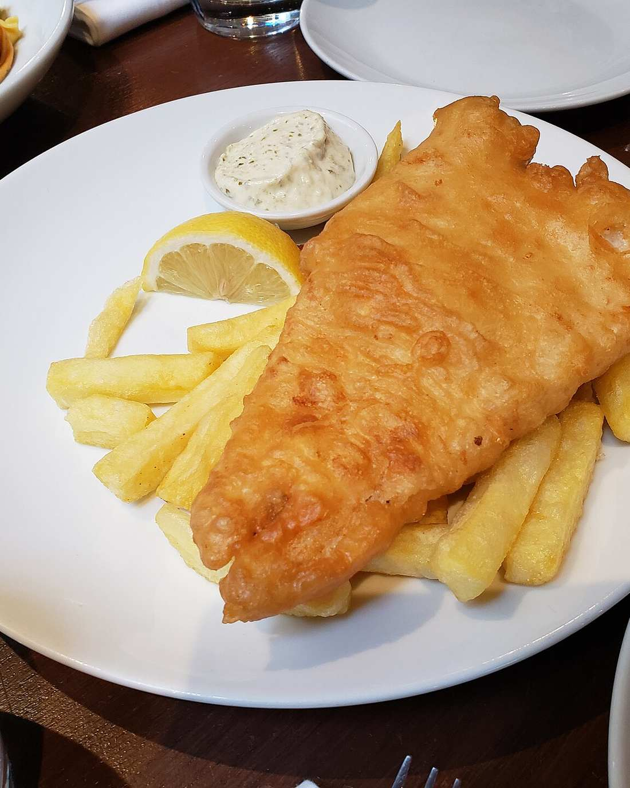
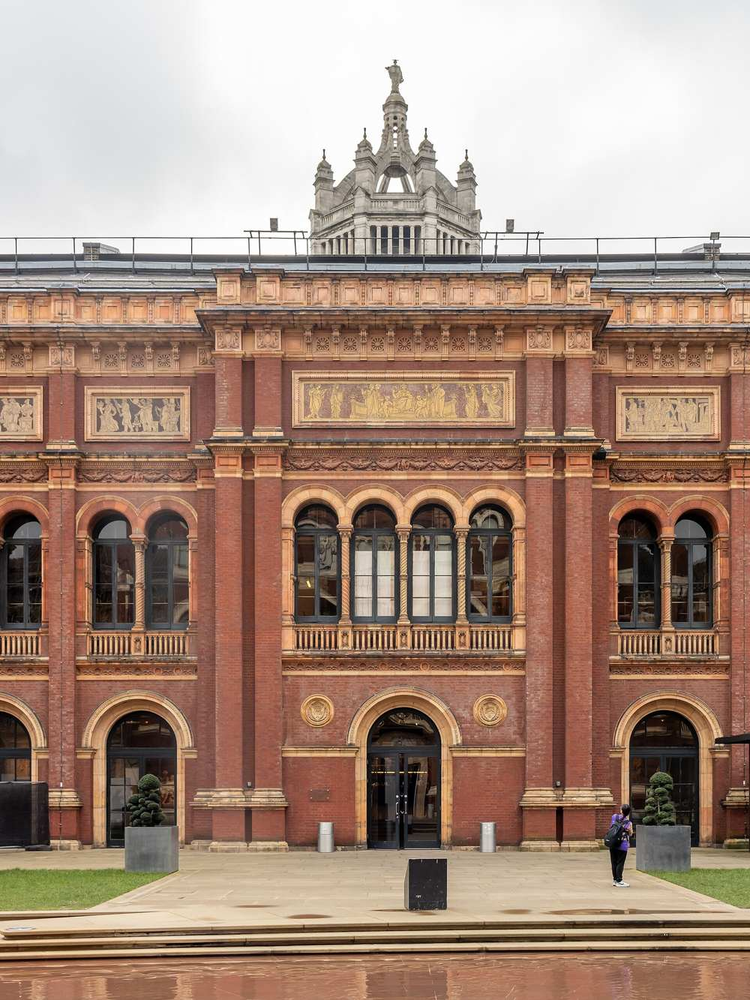

38 Thurloe Place · SW7 · Museum quarter
Cod & chips,
grills, pasta.
Moments from the museums.
A multi-cuisine kitchen a few minutes from the V&A, the Natural History Museum and the Science Museum. Classic British fish and chips served at the table, alongside lamb and chicken grills, burgers, pasta, fresh juices and cocktails.
Open seven days


- 03seating areas
- 07days a week
- 2ways: dine in or take away
- 1classic: cod & chips
Visit
38 Thurloe Place
South Kensington
London SW7 2HP
Near South Kensington station. For reservations, call the restaurant.
Hours · dine in or take away
| Monday | 11am – 11pm |
|---|---|
| Tuesday | 11am – 11pm |
| Wednesday | 11am – 11pm |
| Thursday | 11am – 11pm |
| Friday | 11am – 11pm |
| Saturday | 11am – 11pm |
| Sunday | 11am – 11pm |
Hours as published on the restaurant’s website. Google currently lists 11.30am – 10pm, so to be confirmed.